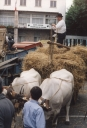
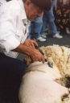

montagnes
le site - patrimoine
nature - sports
Location
saisonnière
la maison
tarifs et réservations


{kind=link}

{kind=link}
Le Couserans vous accueille à bras ouverts !
L'ardoise anthracite directement extraite des carrières bellongaises protège un village de caractère (participation à la Guerre des Demoiselles), entouré de quatre hameaux : Le Château (ancien emplacement de Durfort, au pied Est de Galey), Orchein (au pied Ouest), Le Col de la Hourque (sur la route d'Escarchein) et Escarchein (4,5 km à l'Ouest).
Dans toute la vallée de la Bellongue (anciennement Vallongue), on peut remarquer que la rareté des balcons est compensée par l'abondance des caopucines (fenêtres de toit, en chien-assis, lucarnes...).
Fief paysan, le pays a su préserver des traditions ancestrales, un artisanat foisonnant et une gastronomie typique que les autochtones partagent avec convivialité.
Découvrez :
- le parc pyrénéen de l'art préhistorique ;
- la Forêt aux dinosaures ;
- le musée du Bamalou ;
- les Forges de Pyrene...
Apprenez :
- chez le sabotier ;
- chez l'ardoisier de Saint-Lary ;
- chez l'asinier à Aunac...
Arpentez :
- foires et marchés...
Dégustez :
- les fromages de Saint-Lary, Augirein, Engomer ouMoulis;
- le miel d'Augirein ou de Castillon ;
- le gibier (sanglier, cerf, biche et chevreuil) ;
- la charcuterie : saucisse fraîche et saucisson d'âne, jambon de pays ;
- la truite de la Bouigane ;
- la mounjetado : plat régional à base de haricots secs ;
- la Galeyate (croustade) : galette à pâte feuilletée ;
- L'Hypocras : à l'apéritif ou au dessert, frais et sans glace ;
Ce mélange médiéval de vin doux et d'épices fut consommé jusqu'au XVIIIème siècle par de célèbres fines bouches telles que Gaston Fébus, Henri IV, Rabelais ou encore Louis XIV.
- les truffos a la paden : pommes de terre rissolées...
Émerveillez-vous :
- à la Cité de l'Espace à Toulouse...
Divertissez-vous :
- nombreux événements annuels....
haut de page